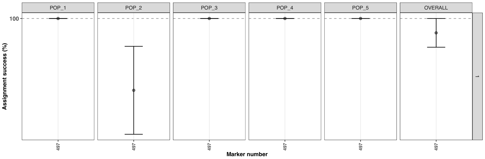
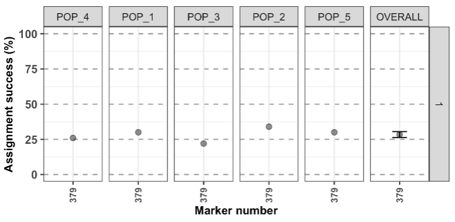

get started using assigner
Thierry Gosselin
2025-04-01
Source:vignettes/get_started.Rmd
get_started.RmdObjectives
With this vignette, you should be able to learn the basics in under 30 minutes.
Assumptions:
- You’ve read the function
documentation on the web or with
?assigner::assignment_ngs. - You’ve read Eric’s paper: Anderson EC (2010) Assessing the power of informative subsets of loci for population assignment: standard methods are upwardly biased. Molecular Ecology Resources, 10, 701–710.
- assigner is installed. If not, follow the install instructions.
Prepare your workspace
- clean your workspace
rm(list = ls()) - load assigner
By default, the working directory is where the file for this vignette
is. To change: setwd("new path here")
Data 1: high structure
For this exercise, we use the first dataset included in assigner.
It’s a simulated dataset generated with grur.
Details of the dataset are available using:
?assigner::data_assigner_sim_01.
data <- data_assigner_sim_01Analysis using THL with gsi_sim
The analysis below uses the cross-validation technique called Training, Holdout, Leave-one-out (THL):
- the training of the model is conducted on 0.8 (80%) of the samples (per strata/pops)
- all the markers are ranked based on Fst, only the training samples are used to generate the Fst.
- the holdout samples consist of 0.2 or 20% of the samples. These are the samples assigned with gsi_sim.
- the process of taking a subsample of individuals (holdout and
training set) to train the model and conduct the assigment analysis with
gsi_sim is repeated 5 times
(
iteration.method = 5).
gsi_sim is not distributed with
assigner, follow the install
instruction, here for my mac it’s:
assigner::install_gsi_sim(fromSource = TRUE)no subsampling
test1 <- assigner::assignment_ngs(
data = data,
assignment.analysis = "gsi_sim",
markers.sampling = "ranked",
thl = 0.2,
iteration.method = 5
)
#>################################################################################
#>########################## assigner::assignment_ngs ############################
#>################################################################################
#>Execution date/time: 20190501@1104
#>Assignment analysis with gsi_sim
#>Folder created: assignment_analysis_method_ranked_20190501@1104
#>Calibrating REF/ALT alleles...
#>Subsampling: not selected
#>Conducting Assignment analysis using Training, Holdout, Leave-one-out
#>Using training samples to rank markers based on Fst
#>Holdout samples saved in your folder
#>Starting parallel computations, for progress monitor activity in folder...
#>
#>Computation time, overall: 7 sec
#>########################## assignment_ngs completed ############################By default, the function uses all the markers and all my CPUs - 1, to
change this last behavior use the argument
parallel.core.
The most important information that you’ll probably want to see are
both returned in the working directory and the object. Not much is kept
in the object test1, because disk space is cheap, memory is
not!
names(test1)
#>[1] "assignment" "assignment.plot"Written in the working directory under
assignment_analysis_method_ranked_date@time, where
date@time is the date and time the function was run:
# 01_radiator_tidy_genomic: folder
# assigner_assignment_ngs_args_20190501@1102.tsv: tibble, file
# assignment_1: folder
# assignment_2: folder
# assignment_3: folder
# assignment_4: folder
# assignment_5: folder
# assignment.plot.pdf: figure
# assignment.ranked.results.iterations.raw.tsv: tibble, file
# assignment.ranked.results.iterations.summary.tsv: tibble, file
# assignment.results.summary.stats.tsv: tibble, file
# holdout.individuals.tsv: tibble, fileThese folders and files are detailed in the function documentation under value returned by the function.
To see the figure:
test1$plot.assignment
By default, the figure display the range of the data, to change this behavior and see the full range for the y axis:
test1$plot.assignment + ggplot2::scale_y_continuous(limits = c(0,100)) 
- assignment is very high for all populations (the points are mean values and the error bar represent the SE based on the 5 iterations).
- the horizontal facet display a
1, because subsampling of the samples was not used, only 1 set was calculated with all samples. An example below will show something different. - the x-axis display the number of marker used
497. Usingdplyr::n_distinct(data$MARKERS)shows that the dataset contains 500 markers, as description of the dataset suggest, so why a lower number was used? By default, the function will keep only polymorphic markers in common between strata/pops (doc). Removing samples from the original simulated data, and low MAC result in losing 3 markers. If you want to clean the data before running the function:
data %<>%
radiator::filter_monomorphic(data = .) %>%
radiator::filter_common_markers(data = .)
#>Filter monomorphic markers
#>Number of individuals / strata / chrom / locus / SNP:
#> Blacklisted: 0 / 0 / NA / NA / 3
#>
#>Filter common markers:
#>Number of individuals / strata / chrom / locus / SNP:
#> Blacklisted: 0 / 0 / 0 / 0 / 0with subsampling
For the second test, we will test several marker numbers and use the subsampling arguments to select 30 individuals in each strata (repeating this 3 times).
test2 <- assigner::assignment_ngs(
data = data,
assignment.analysis = "gsi_sim",
markers.sampling = "ranked",
thl = 0.2,
iteration.method = 5,
marker.number = c(100, 200, 300, 400, "all"),
subsample = 30,
iteration.subsample = 3
)
#> ################################################################################
#> ########################## assigner::assignment_ngs ############################
#> ################################################################################
#> Execution date/time: 20190501@1158
#> Assignment analysis with gsi_sim
#> Folder created: assignment_analysis_method_ranked_20190501@1158
#> Calibrating REF/ALT alleles...
#> Subsampling: selected
#> using subsample size of: 30
#>
#> Analyzing subsample: 1
#> Conducting Assignment analysis using Training, Holdout, Leave-one-out
#> Using training samples to rank markers based on Fst
#> Holdout samples saved in your folder
#> Starting parallel computations, for progress monitor activity in folder...
#>
#> Analyzing subsample: 2
#> Conducting Assignment analysis using Training, Holdout, Leave-one-out
#> Using training samples to rank markers based on Fst
#> Holdout samples saved in your folder
#> Starting parallel computations, for progress monitor activity in folder...
#>
#> Analyzing subsample: 3
#> Conducting Assignment analysis using Training, Holdout, Leave-one-out
#> Using training samples to rank markers based on Fst
#> Holdout samples saved in your folder
#> Starting parallel computations, for progress monitor activity in folder...
#>
#> Computation time, overall: 19 sec
#> ########################## assignment_ngs completed ############################The object generated is similar to the analysis witout subsampling. The output folder is different. The subsample folders have the same content as the output of the analysis witout subsampling.
# 01_radiator_tidy_genomic: folder
# assigner_assignment_ngs_args_20190501@1540.tsv: tibble, file
# assignment.plot.pdf: figure
# assignment.ranked.results.summary.stats.all.subsamples.tsv: tibble, file
# assignment.results.summary.stats.tsv: tibble, file
# subsample_1: folder
# subsample_2: folder
# subsample_3: folder
# subsampling_individuals.tsv: tibble, fileTo view the figure:
test2$plot.assignment + ggplot2::scale_y_continuous(limits = c(0,100)) 
- The last vertical and horizontal facets are the mean assignment for all the subsampling iterations and mean assignment over populations, respectively.
- With the last plot, in the lower right corner, corresponding to the overall average (subsampling and strata/pops).
- the number of markers doesn’t affect the assignment analysis, the top 100 markers are as good as using all the 497 markers. Keep in mind that this is rarely the case with real datasets…
This dataset as a high overall Fst value:
The look of the membership probabilities with adegenet
dapc analysis would show something similar to this:

Data 2: low structure
Let’s try the same analysis, but this time with a dataset with lower
Fst. It’s a simulated dataset generated with grur.
Details of the dataset are available using:
?assigner::data_assigner_sim_02.
data <- data_assigner_sim_02Analysis using THL with gsi_sim
test3 <- assigner::assignment_ngs(
data = data,
assignment.analysis = "gsi_sim",
markers.sampling = "ranked",
thl = 0.2,
iteration.method = 5,
marker.number = c(100, 200, 300, 400, "all"),
subsample = 30,
iteration.subsample = 3
)To view the figure:
test3$plot.assignment + ggplot2::scale_y_continuous(limits = c(0,100))
# <img src="assignment_thl_test3.png">: works
#: works
#knitr::include_graphics("assignment_thl_test3.png"):works
- Very different overall results…
- For the assignment analysis of species exhibiting overall low structure, using more markers will, generally, help the assingnment (if the data is filtered correctly…)
This is the overall Fst value:
This is the membership probabilities with adegenet dapc
analysis:

The populations are very admixed because of the high migration rate used during the simulations.
Analysis using LOO with gsi_sim
Let’s try using the Leave-One-Out cross-validation technique
with dataset2. With this method, there is no potential bias during
marker selection, you can used all the markers with
marker.number = "all" or a string of marker numbers like
the example above, but here, there’s no point in using less markers
randomly.
The Leave-One-Out method means that the allele frequencies are calculated without the sample being assigned. This is repeated for each sample.
test4 <- assigner::assignment_ngs(
data = data,
assignment.analysis = "gsi_sim",
markers.sampling = "random",
marker.number = "all"
)
#> ################################################################################
#> ########################## assigner::assignment_ngs ############################
#> ################################################################################
#> Execution date/time: 20190501@1317
#> Assignment analysis with gsi_sim
#> Folder created: assignment_analysis_method_random_20190501@1317
#> Calibrating REF/ALT alleles...
#> Subsampling: not selected
#> Conducting Assignment analysis with markers selected randomly
#> Making a list containing all the markers combinations
#> Starting parallel computations, for progress monitor activity in folder...
#> Summarizing the assignment analysis results by iterations and marker group
#> Compiling results
#> ########################## assignment_ngs completed ############################To view the figure:
test4$plot.assignment + ggplot2::scale_y_continuous(limits = c(0,100)) 
Conclusion: not much to gain here by using the LOO…